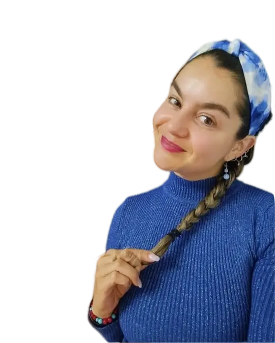

Hinchazón abdominal
Te despiertas bien pero a media mañana ya pareces de 6 meses. Gases, presión, incomodidad constante. Te dijeron que es "estrés".
Sin dietas extremas. Sin dependencia de fármacos.
Nutricionista especializada en microbiota, SIBO, reflujo e inflamación intestinal en Barcelona. Método Doshas: nutrición funcional, ayurveda y psiconutrición integrados en un solo protocolo. Para personas que lo intentaron todo sin obtener resultados.
Los problemas digestivos no son normales. Son síntomas de algo más profundo que ninguna pastilla puede resolver de forma permanente.
Te despiertas bien pero a media mañana ya pareces de 6 meses. Gases, presión, incomodidad constante. Te dijeron que es "estrés".
Dependes de los antiácidos para comer tranquila. Los médicos te dicen que es crónico. No tienen por qué tener razón.
Intolerancia a todo, digestión lenta, cerebro en niebla. Tu microbiota está desequilibrada y hay un protocolo específico para ello.
Agotamiento que no cede con el descanso. Tu cuerpo gasta toda su energía en procesos inflamatorios que no deberían estar activos.
Subir o bajar de peso sin resultados duraderos. El problema no es la fuerza de voluntad — es el equilibrio del ecosistema intestinal.
Lactosa, gluten, FODMAP… parece que no puedes comer nada. Las intolerancias son síntoma, no el problema raíz.
Tu tránsito nunca es predecible. La irregularidad intestinal crónica tiene origen en el ecosistema intestinal, no en la fibra.
Fatiga, niebla mental, antojos de azúcar y digestión comprometida. Condiciones frecuentes con protocolo específico y natural.
La piel refleja el estado interno. Muchos problemas cutáneos tienen origen en la inflamación intestinal y el desequilibrio de la microbiota.
La tiroides y el intestino están estrechamente conectados. La inflamación crónica puede afectar la función tiroidea directamente.

Licenciada en Nutrición y Dietética · Psiconeuroinmunología · Medicina Ayurvédica · Barcelona, España
Soy nutricionista especializada en salud digestiva, microbiota e inflamación intestinal, con sede en Barcelona. Mi método combina la ciencia de la psiconeuroinmunología (PNI) con los principios del Ayurveda para crear protocolos únicos que abordan el problema desde múltiples ángulos.
Trabajo con personas que llevan años visitando médicos, haciendo dietas y tomando suplementos sin resultados duraderos. No tratamos síntomas aislados: estudiamos tu caso completo — tu microbiota, tu historial digestivo, tu tipo constitucional, tus patrones emocionales — para diseñar un protocolo que tiene sentido para tu cuerpo.
Solicitar evaluación — 45 minDoshas no es una dieta. Es un método que cambia la manera en que te relacionas con la comida y con tu cuerpo. Tres procesos. Resultados para siempre.
Eliminamos los alimentos que te hacen daño y que producen síntomas como acidez o hinchazón. Limpiamos el cuerpo para bajar la inflamación y que tu sistema inmune deje de estar alterado.
Duración aproximada: 2 meses. Puedes notar cambios como menos hinchazón en manos, pies y cara, más ánimo y menos ansiedad.
Incorporamos un plan de alimentación con alimentos naturales, evitando procesados. Mejoramos tu microbiota con probióticos, fibra y fermentados. También nutrimos el alma: meditaciones, respiraciones y actividad física adecuada para ti.
A esta altura los cambios son notables: sin ansiedad, mejor sueño, energía renovada.
Reintroducimos los alimentos que eliminamos al principio. La idea de Doshas es volverte a tu hábitat: que puedas comer de todo y disfrutar de tu vida sin dolencias gastrointestinales.
"El veneno está en la dosis." Consumir tus favoritos ocasionalmente no es un problema. Así logramos una transformación que dura.
El acceso al programa es por evaluación previa. María José revisa cada caso individualmente y determina si Doshas es la solución adecuada para ti.
Un programa completo donde abordamos tu caso digestivo de forma integral. Para personas con SIBO, disbiosis, inflamación intestinal, reflujo, problemas de peso, fatiga crónica, hipotiroidismo, acné o intolerancias que no han respondido a tratamientos convencionales.
Incluye
El programa no está
disponible para todos.
45 minutos · Online · Sin compromiso
"Entendí el por qué de varias enfermedades gastrointestinales y mentales."
"Buen trato, interés de lo que te pasa, cada visita hay cambios nutricionales y consejos para mejorar, eso hace que sigas con motivación y ganas."
"Es excelente. La conozco mucho tiempo, es competente al máximo."
* Testimonios reales de pacientes verificados en Doctoralia. Los resultados pueden variar según cada caso.
45 minutos para escuchar tu caso. María José evalúa si el programa Doshas es la solución adecuada para ti.
Análisis completo de tu historial, síntomas, estilo de vida y constitución. Se identifica el origen real del problema.
Plan nutricional diseñado para ti, tu Dosha y tu condición digestiva. Sin plantillas, sin dietas genéricas.
Seguimiento, psiconutrición y hábitos que sostienen los resultados de forma permanente.
El Sobrecrecimiento Bacteriano Intestinal es más común de lo que crees y se confunde constantemente con SII, colon irritable o "digestión lenta".
Protocolo paso a paso para restaurar tu ecosistema intestinal.
El omeprazol no es una solución. Descubre por qué tienes reflujo y qué puedes hacer.
La inflamación intestinal puede bloquear la regulación del peso. Entender la causa cambia todo.
El agotamiento que no cede puede tener origen en tu intestino.
Tu piel refleja el estado de tu intestino. La conexión piel-microbiota es más directa de lo que imaginas.
¿Ayuda o empeora? La ciencia tiene respuestas claras según tu condición.
No es para castigarte. Es para volver a tu cuerpo con cariño.
Trabajamos juntos en:
Mini rituales, hábitos Doshas, reflexiones y herramientas simples — sin remedios, sin restricciones, sin obsesión.
Seguir en Instagram →Este no es un reto.
Es un reencuentro contigo 🤍
Si estás aquí es porque tu cuerpo ya te está pidiendo algo distinto. Y quiero acompañarte en este camino.
¿Te quedas conmigo? ✨
@mariajoseguerravaldesVideos educativos sobre microbiota, SIBO, reflujo y salud digestiva integrativa. Contenido gratuito para entender tu cuerpo.
Solicita tu evaluación gratuita de 45 minutos. Analizamos tu caso, entendemos qué está pasando en tu digestión y te orientamos sobre si el programa es para ti. Sin compromiso.
Solicitar evaluación gratuita →⏰ Solo 5 plazas disponibles este mes
🤍 Evaluación Reprogramación Digestiva · 45 min · Online · Sin coste